install.packages(c("carData", "rpart", "rpart.plot", "tree",
"randomForest", "caret", "ggplot2"))Trees and Random Forests
Week 3, 16 September
Last week’s method concealed nothing, in the sense that every prediction \(K\)-nearest neighbors produced could be traced back to a small set of countries that could be located on a scatterplot. This week begins from the same premise, with a model that can be drawn on a whiteboard and read aloud as a sequence of rules, and then abandons that transparency deliberately, in exchange for a considerably better model.
The session therefore stages a tension that runs through much of contemporary machine learning. On the one hand, a model whose reasoning can be inspected is easier to defend, to audit, and to explain to somebody who has to act on its output. On the other hand, the models that predict best are frequently the ones whose reasoning cannot be inspected at all. Trees and forests are unusually well suited to examining this tension, because the movement from the first situation to the second occurs within a single family of methods and can be observed at each step.
What trees are good at, and what they are not
Tree models in statistical learning bear an obvious kinship to decision trees as we ordinarily understand them, and they have been used widely for prediction. It is worth setting out at the start what they offer and what they cost.
Benefits.
- They capture interactions between features and non-linear associations without being instructed to look for them.
- They handle categorical variables well, and the results remain interpretable.
- They are relatively fast compared with most other machine-learning algorithms.
- They do not require the features to be rescaled.
The final point deserves a moment, since it undoes an entire section of last week. \(K\)-nearest neighbors was at the mercy of the units in which its features happened to be measured, and we devoted considerable effort to placing everything on a common scale so that income would not swamp fertility. A tree, however, never compares two features to each other. Instead, it asks one question at a time, about a single variable, and on that variable’s own scale, so that multiplying a feature by a thousand changes nothing whatever and the problem simply does not arise.
The disadvantage, and it is a serious one, is that a single tree does not predict well out of sample.
That tension is the shape of the week, in that everything after the first third is an attempt to retain the benefits while addressing the disadvantage, by growing a forest of trees and allowing them to vote.
Two datasets this week
Part I returns to the country data from last week, on the grounds that the fastest way to see what is distinctive about a tree is to apply it to material you have already modeled by other means.
Part II moves to Fearon and Laitin’s civil war data (Fearon and Laitin 2003), where the outcome is binary and rare, and where the more difficult problems arise.
library(carData)
library(rpart)
library(rpart.plot)
library(tree)
library(randomForest)
library(caret)
library(ggplot2)
options(scipen = 999)
data(UN, package = "carData")
countries <- na.omit(UN[, c("ppgdp", "infantMortality", "fertility",
"pctUrban", "lifeExpF", "group")])
countries$ppgdp <- countries$ppgdp / 1000 # thousands, as last week
nrow(countries)[1] 193One row per country, which is worth noting now, because Part II will not have that luxury.
Part I. A regression tree
Last week we fitted a \(K\)-nearest neighbors curve to the relationship between per capita GDP and infant mortality, and gave some attention to the fact that the relationship bends: mortality falls very steeply across the poorest range and then flattens almost completely. A straight line was therefore a poor description of the relationship, and \(K\)-nearest neighbors accommodated the curvature instead by averaging over a moving window of neighbors.
A tree accommodates it differently, and placing the two side by side is the most efficient way to establish what a tree is.
One feature
m_tree <- rpart(infantMortality ~ ppgdp, data = countries)
rpart.plot(m_tree, box.palette = "GnBu")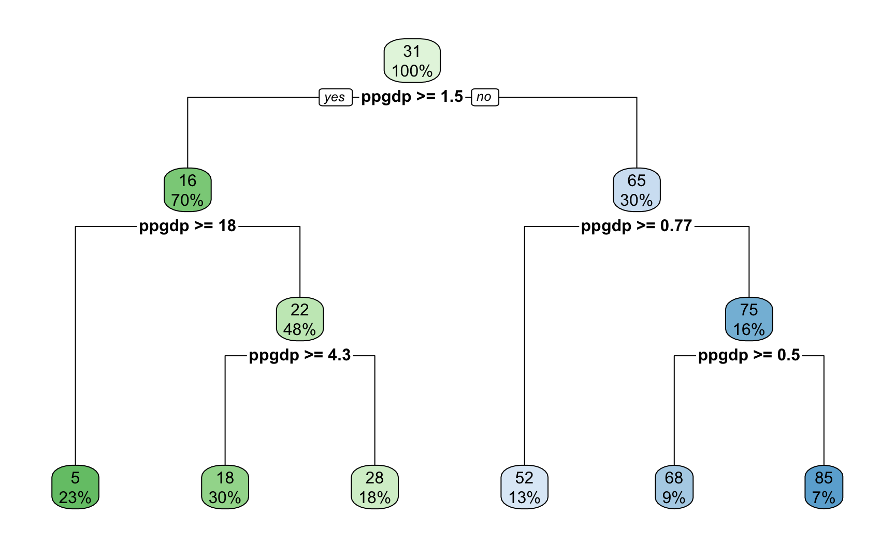
At each interior node there is a decision rule of the form \(x > c\). Follow the branch that matches, and continue until you reach a bottom node, which is called a leaf. The number in the leaf is the prediction, namely the average infant mortality of all the countries that arrived there.
Reading one path aloud amounts to stating a substantive claim about development and child survival in ordinary language, without recourse to a formula, and very few of the models encountered in this course can be communicated in that way.
We can now examine what the tree is as a function.
oo <- order(countries$ppgdp)
ddf <- countries[oo, ]
plot(ddf$ppgdp, ddf$infantMortality,
col = "gray55", pch = 19, cex = 0.7,
xlab = "Per capita GDP (thousands of US$)",
ylab = "Infant mortality (per 1,000 live births)")
lines(ddf$ppgdp, predict(m_tree, ddf), col = "maroon", lwd = 3)
for (i in m_tree$splits[, 4]) {
abline(v = i, col = "orange", lty = 2)
}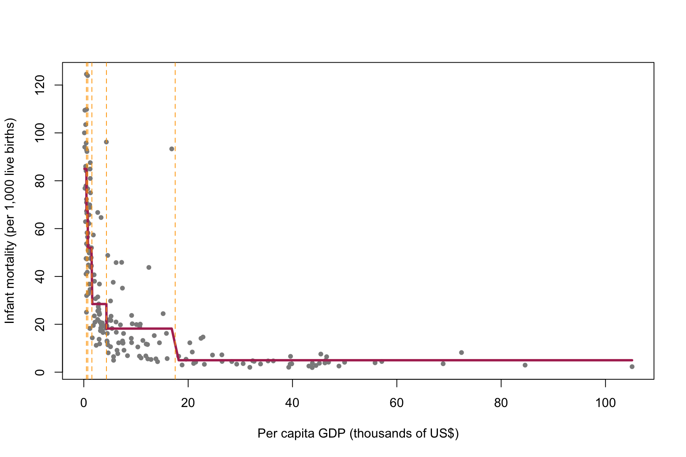
The set of leaves provides a partition of the predictor space into disjoint regions. With a single feature that partition is simply a set of intervals, marked by the dashed vertical lines. Within each interval we take the average outcome of the countries that fall there, which produces the step function drawn in red. That step function is \(\hat{f}\), and to predict for a new country we locate its interval and read off the corresponding step.
The placement of the boundaries is itself informative, in that they are tightly spaced at the left, where mortality changes rapidly, and widely spaced at the right, where it does not. Notably, nothing in the procedure instructed the algorithm to distribute them in this way.
The same data, two algorithms
Last week’s model can usefully be placed on the same figure, so that the two procedures may be compared directly.
library(kknn)
grid <- data.frame(ppgdp = sort(countries$ppgdp))
knn_fit <- kknn(infantMortality ~ ppgdp, train = countries, test = grid,
k = 10, kernel = "rectangular")
plot(ddf$ppgdp, ddf$infantMortality,
col = "gray75", pch = 19, cex = 0.7,
xlab = "Per capita GDP (thousands of US$)",
ylab = "Infant mortality (per 1,000 live births)",
main = "Tree and KNN on the same data")
lines(grid$ppgdp, knn_fit$fitted.values, col = "navy", lwd = 2.5)
lines(ddf$ppgdp, predict(m_tree, ddf), col = "maroon", lwd = 3)
legend("topright", legend = c("Regression tree", "KNN, k = 10"),
col = c("maroon", "navy"), lwd = c(3, 2.5), box.lty = 0, cex = 0.85)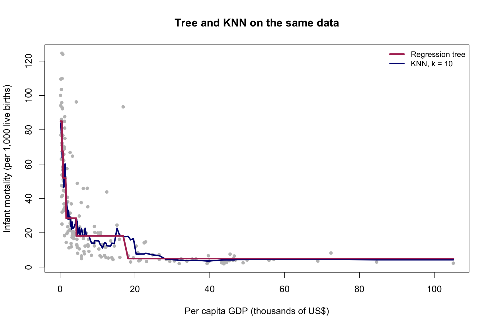
Both are step functions constructed from local averages, and neither was told the shape of the relationship in advance. The difference between them lies entirely in the manner in which the neighborhoods are determined.
\(K\)-nearest neighbors uses a window of fixed size that slides along the axis. Every prediction averages exactly ten countries, whether those ten lie within a few hundred dollars of one another or are distributed across forty thousand. This is why the curve becomes unstable on the right, where the data thin out: the window preserves its count while losing its substantive meaning.
The tree, by contrast, uses regions of fixed content, having selected where to cut and therefore how wide each region should be, narrowly where the outcome changes quickly and broadly where it does not. The cost of proceeding this way is that the steps are coarse. The gain, however, is that the width of a neighborhood becomes a decision the algorithm reached about the data, rather than a number imposed upon it in advance.
What the algorithm is minimizing
We are splitting the feature space \(X = \{x_1, x_2, \dots, x_k\}\) into smaller rectangles, or boxes. If we can identify a pattern of splits with low prediction error on the training data, we can then predict for a new case by determining which box it belongs to.
Roughly, a tree may be thought of as a \(K\)-nearest neighbors algorithm in which \(k\) is dynamic: the neighborhood is a box rather than a window, and the boxes are wide where the data are sparse and narrow where they are dense, rather than fixed in advance. The figure above is that proposition drawn, and it is worth returning to whenever the relationship between the two methods becomes unclear.
Formally, for a continuous outcome:
\[\begin{align} \min_{R_1, R_2, \dots, R_J} \sum_{j=1}^{J} \sum_{i \in R_j} (y_i - \hat{y}_{R_j})^2 \end{align}\]
The boxes \(R_j\) are chosen so as to minimize the total squared deviation of observations from the mean response within each box. In principle there are infinitely many ways of defining the boxes, and evaluating all of them is computationally impossible. A recursive partitioning procedure is therefore used instead:
- Scan every feature to identify the one whose split yields the best improvement, and split there.
- Repeat within each resulting box, and continue until splitting becomes too costly or a pre-set size is reached.
This is a greedy approach, in that at each step it takes the split that appears best at that moment, without considering the consequences for the splits beneath it. The resulting tree is therefore a good tree arrived at through a sequence of locally sensible decisions. It is not the best one, and the best one is not known.
Two features, and the partition of the space
Before fitting anything, it is worth looking at the two features together, with the outcome carried by the color of each point.
ggplot(countries, aes(ppgdp, pctUrban, colour = infantMortality)) +
geom_point(size = 2)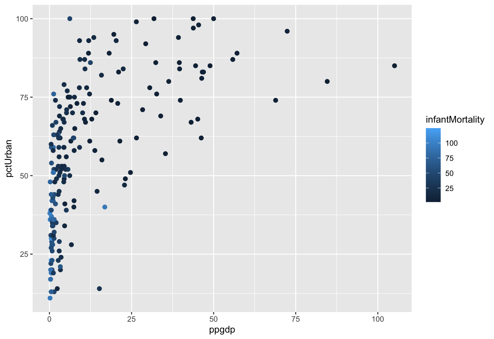
Each country is a point located by its income and its urbanization, and its shade reports the outcome we are trying to predict. The dark points, where mortality is high, gather in one corner of the plot, and the pale ones occupy the rest. A tree fitted to these two features is an attempt to draw rectangles around those regions.
With two features the boxes do become rectangles, and they can still be drawn.
t2 <- tree(infantMortality ~ ppgdp + pctUrban, data = countries,
control = tree.control(nobs = nrow(countries), mindev = 0.002))
partition.tree(t2, main = "The partition of the feature space")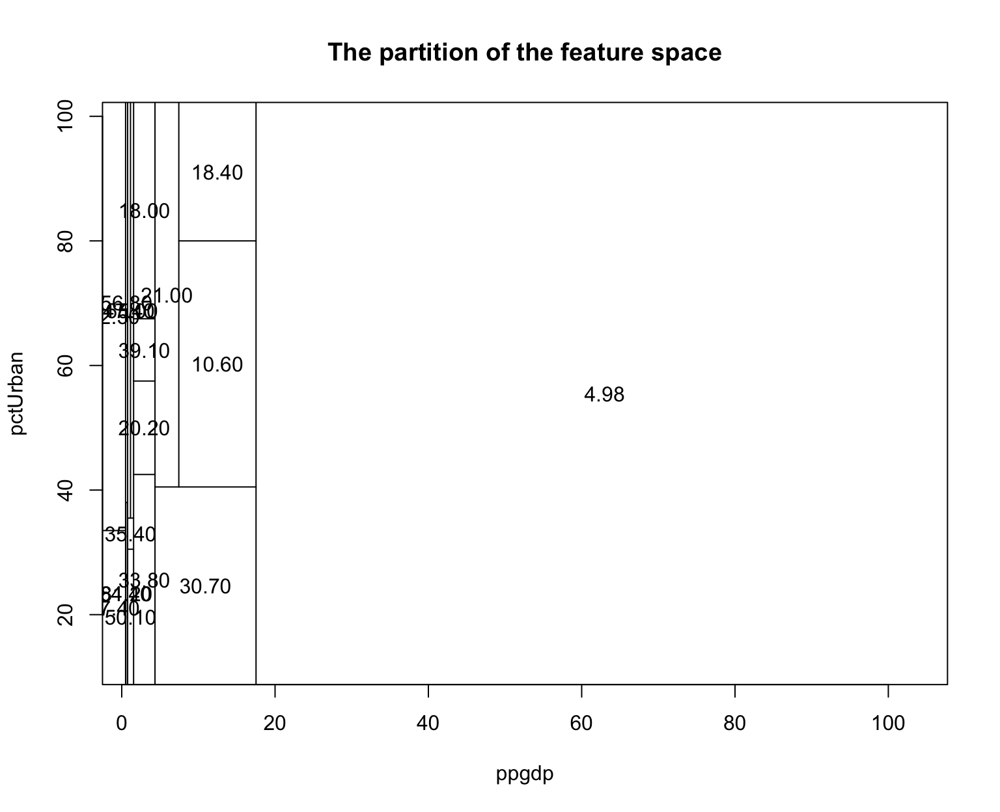
Every rectangle is a leaf, and the number printed within it is the predicted infant mortality for a country falling there. This is the image to retain for the remainder of the block, namely that a tree divides the space of features into boxes and then assigns a single number to each box.
The mindev argument lets the tree grow a little further than it otherwise would, since tree() stops splitting quite early by default and income alone accounts for most of the variation in infant mortality.
One feature of that figure deserves emphasis, given how much of last week was devoted to the opposite situation. Nothing in the partition required the two features to be placed on a common scale. Per capita GDP runs to roughly a hundred and percent urban to a hundred, and had income been left in dollars the boundaries would sit at different numbers on the axis while the partition would be identical. The difficulty that the rescaling section of last week was designed to address therefore does not arise here at all.
A categorical feature, with no dummy coding
The UN data include group, which sorts countries into OECD, African, and other categories. It is a factor rather than a number, and a tree accepts it as it stands.
m_tree3 <- rpart(infantMortality ~ ppgdp + pctUrban + group, data = countries)
rpart.plot(m_tree3, box.palette = "GnBu")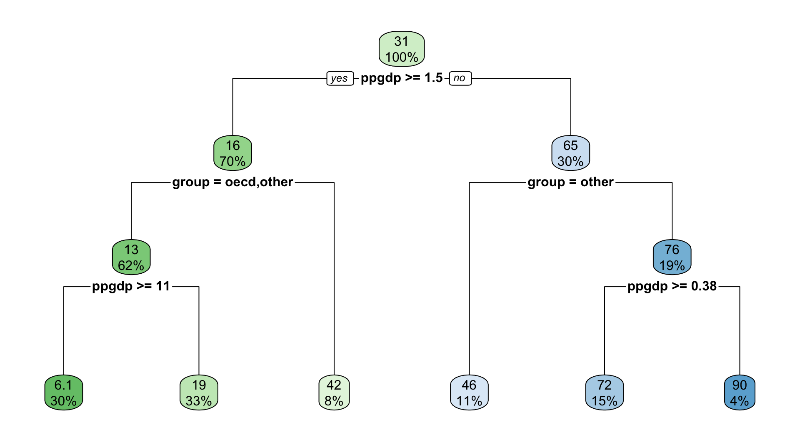
There are no dummy variables, no reference category, and no interaction terms. The tree simply asks which group a country belongs to and directs it down the appropriate branch, and the split is then printed as the names of the categories rather than as a coefficient on an indicator.
Consider whether group appears at all, and, if it does, what happens to income on either side of it. If the tree asks about income at a different threshold within one group than within another, it has identified an interaction, which is to say that the relationship between wealth and child mortality is not the same everywhere. Nothing in the specification requested this, whereas a linear model recovers such an interaction only if the researcher thinks in advance to look for it.
Those are the first two items on the list at the head of this handout, and together they are the principal reason trees are worth knowing.
Cost complexity, and the parameter that plays the role of k
Left to itself, the procedure continues splitting until every leaf is small and homogeneous, which fits the training data very well indeed. Last week, however, taught us to regard that result with suspicion rather than satisfaction.
The standard remedy rewrites the problem as
\[\begin{align} C(T, y) = L(T, y) + \alpha |T| \end{align}\]
where \(L(T, y)\) is the loss from fitting outcome \(y\) with tree \(T\), and \(|T|\) is the number of nodes. Small loss is always preferred. Nevertheless, we do not want a tree so complex that it captures every fluctuation in the training data and consequently predicts poorly outside it, and the size of the tree is therefore penalized, with \(\alpha\) determining how heavily that penalty is applied.
A large \(\alpha\) makes complexity expensive and returns a small tree, which may in consequence fit poorly, whereas a small \(\alpha\) permits the tree to grow large. Here \(\alpha\) is analogous to \(k\) in \(K\)-nearest neighbors, and, as with \(k\), no value is correct in advance.
The question of how to choose it has the same answer as last week, and as most weeks: cross-validation.
Pruning
The practical procedure is to allow the tree to grow first, without any concern for its size, and then to cut it back to the complexity that cross-validation prefers. Since rpart cross-validates as it proceeds, the relevant table is already available.
The operative word is grow, since a tree that is stopped early never becomes sufficiently complex to overfit, and in that case there is no trade-off to observe at all. We therefore set cp to essentially zero and allow the procedure to run until the leaves contain a handful of countries each.
set.seed(7)
big_tree <- rpart(infantMortality ~ ppgdp + pctUrban + group,
data = countries,
control = rpart.control(cp = 0.000001, minsplit = 10,
minbucket = 5, xval = 10))
cpt <- big_tree$cptable
cat("Leaves in the grown tree:", max(cpt[, "nsplit"]) + 1, "\n")Leaves in the grown tree: 29 With roughly a hundred and eighty countries and leaves holding five apiece, that tree has divided the world into a considerably larger number of categories than the world contains. It will predict its own training data very accurately and generalize poorly, which is precisely the condition we need to be able to observe.
plotcp() draws the cross-validation table that rpart constructed along the way, which records, for every size of tree from one split upward, the cross-validated error of a tree of that size.
plotcp(big_tree)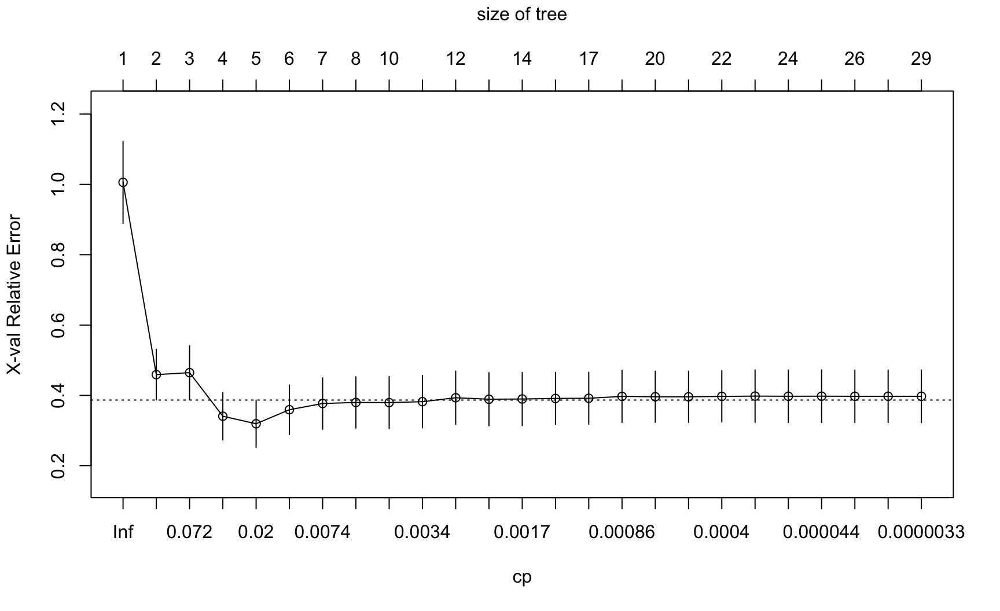
This figure carries four pieces of information at once, none of them labeled obviously, and it is worth taking them in turn.
The bottom axis is the complexity parameter, on a log scale, running from large on the left to small on the right. A large \(\alpha\) implies an expensive penalty and therefore a small tree, so that complexity increases as one moves to the right, which is the same orientation as last week’s \(\log(1/k)\) figure.
The top axis is the size of the tree, measured in number of leaves. It is the same axis expressed in more intuitive units, and it is generally the one to attend to.
The vertical axis is cross-validated error, scaled so that a tree with no splits at all sits at 1. A value of 0.3 indicates that the tree has removed seventy per cent of the error that would result from predicting the same number for every country.
The vertical bars are one standard error on either side of each estimate, and the dotted horizontal line sits one standard error above the lowest point on the curve. That line supports an alternative rule for choosing a tree, which we set aside here in favor of the simpler one below.
The figure should be read in the same way as last week’s test-error curve. The error falls while additional splits are still recovering real structure, flattens, and then rises once the tree begins fitting individual countries rather than the pattern among them.
Choosing where to cut
We take the tree with the lowest cross-validated error, which is the value the table reports directly.
i_min <- which.min(cpt[, "xerror"])
cp_best <- cpt[i_min, "CP"]
cat("Lowest CV error at", cpt[i_min, "nsplit"] + 1, "leaves, cp =",
cp_best, "\n")Lowest CV error at 5 leaves, cp = 0.01229076 One caution before pruning. The curve is typically rather flat near its bottom, so the difference between the best tree and its immediate neighbors is often smaller than the uncertainty in the estimate. The minimum is therefore a reasonable choice rather than a precise one, and a tree one or two splits away would usually serve about as well.
best_tree <- prune(big_tree, cp = cp_best)
rpart.plot(best_tree, box.palette = "GnBu", main = "After pruning")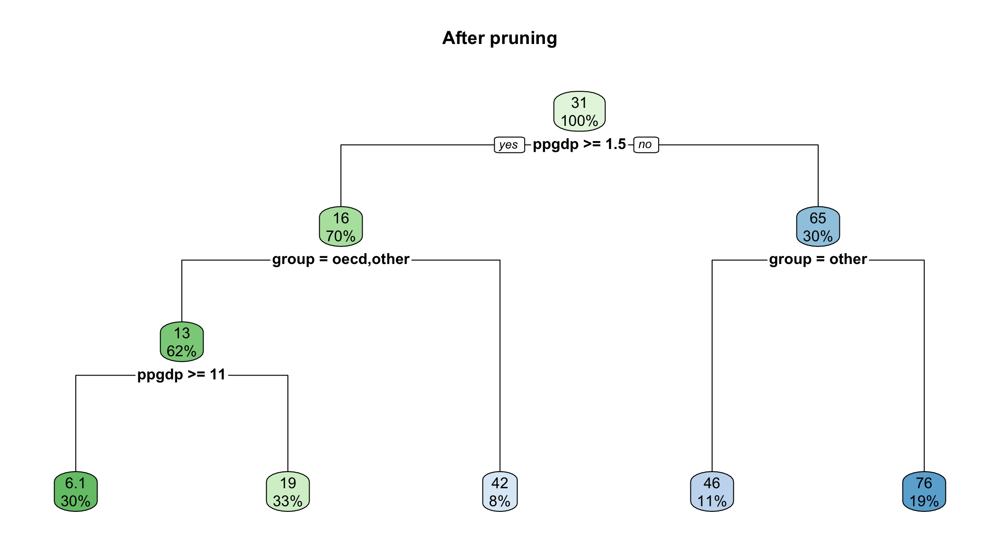
That is the whole of the method. Everything established so far, however, was established with a continuous outcome, one row per country, and a dataset already familiar from last week, and the second half of this handout changes all three of those conditions at once.
Part II. The same idea, on a rare binary outcome
We now turn to onset, and the algorithm itself barely changes: instead of averaging the outcome within each box we take the majority vote, and instead of squared error we use a measure of how mixed each box is. Everything concerning splitting, greediness, cost complexity, and pruning carries over unaltered.
Three things do change, however: the data are new, the outcome is binary, and the outcome is very rare. The third of these occupies most of what follows, and it shapes nearly every judgment we go on to make about the model.
url <- paste0("https://raw.githubusercontent.com/babakrezaee/",
"AppliedAI-PoliSci/refs/heads/main/data/FearonLaitin2003.csv")
fl <- read.csv(url)
vars <- c("onset", "warl", "gdpenl", "lpopl1", "lmtnest", "ncontig",
"Oil", "nwstate", "instab", "polity2l", "ethfrac", "relfrac")
cw <- na.omit(fl[, vars])
cw <- cw[cw$onset %in% c(0, 1), ]
nrow(cw)[1] 6326These are Fearon and Laitin’s civil war data, and onset takes the value 1 if a civil war began in that country in that year.
The covariates are drawn from Fearon and Laitin’s own specification, although the models below use eight of them rather than the full set. The reduction is made for legibility rather than for substance: a tree fitted on eleven features produces a figure that nobody can read on a screen, and the point of Part II is to be able to see what the algorithm did. The three variables set aside, prior war, non-contiguity, and political instability, remain in cw, so that restoring them is a matter of adding three terms to a formula. Doing so, and observing how much the figures deteriorate, is the first thing worth trying in the workshop.
Two features of that block are worth noting, since each can consume an hour when encountered for the first time in one’s own project. Oil is capitalized in this file while nothing else is, and R will report that the object does not exist rather than inferring what was intended. onset, meanwhile, carries an occasional code other than 0 or 1, for wars already under way when a country entered the data, and we therefore retain only the two values we intend to model.
One structural difference from Part I should be acknowledged here, since we are about to accept it rather than solve it. Every row is a country in a single year, from 1945–1999, so that the United States appears fifty-five times with identical terrain, identical colonial history, and an income that barely moves between consecutive rows. Part I had one row per country and did not confront this. Here the structure cannot be collapsed away, because a civil war begins in a particular year and cannot be averaged into a country’s post-war summary. The point returns at the end of this handout, where it acquires a name.
The outcome can now be counted, and the resulting figure is the one on which the remainder of this handout turns.
table(cw$onset)
0 1
6221 105 round(mean(cw$onset), 4)[1] 0.0166Civil wars begin in roughly two country-years in a hundred, and that figure is the single most consequential quantity on this page, since nearly everything that follows is shaped by it.
The immediate implication can be stated directly by considering a model that consists of one sentence, and that contains no data, no fitting, and no thought whatever:
Predict that no civil war will begin, anywhere, ever.
That model is correct approximately ninety-eight per cent of the time, and reported as accuracy it appears excellent. It is nevertheless worthless, since the only cases of any substantive interest are precisely the ones it gets wrong, in every instance, by construction.
The model is worth retaining for comparison, since we are about to build something considerably more sophisticated and will then need to establish whether it improves upon this.
set.seed(7)
n <- nrow(cw)
train_id <- sample(1:n, floor(0.7 * n))
Train <- cw[train_id, ]
Test <- cw[-train_id, ]One tree on onset
m_stump <- rpart(factor(onset) ~ gdpenl + lpopl1 + lmtnest + Oil +
nwstate + polity2l + ethfrac + relfrac,
data = Train, method = "class",
control = rpart.control(cp = 0.004, minbucket = 25))
rpart.plot(m_stump, box.palette = "GnBu")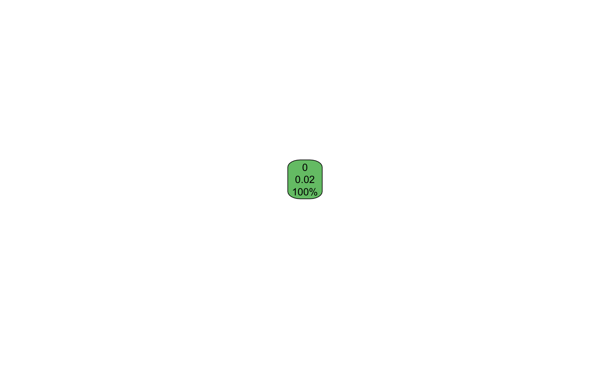
That figure is not an error, and it is worth pausing over rather than correcting immediately. The tree has declined to split at all. It reports a single node containing every case, predicts no onset for all of them, and attaches a probability of 0.02, which is simply the base rate we computed a moment ago.
The reason lies in the criterion. A split is retained only if it improves the tree’s classification sufficiently to justify its cost, and on an outcome occurring in two per cent of cases no split improves classification whatever. Predicting no war everywhere is already correct ninety-eight per cent of the time, and no partition of the feature space available to rpart does better than that. The algorithm therefore concluded, entirely correctly on its own terms, that the best available tree is the one that asks no questions at all.
We have thus encountered the central difficulty of this half of the handout before fitting anything of interest. The one-sentence model set out above has not merely proved difficult to beat. It has turned out to be the model that rpart selects when left to its own devices, and it arrived not through any failure of the software but through the faithful execution of the objective we gave it.
Telling the algorithm that the rare class matters
The standard remedy is to instruct the procedure to treat the two classes as equally important, notwithstanding that they are not equally common.
m_class <- rpart(factor(onset) ~ gdpenl + lpopl1 + lmtnest + Oil +
nwstate + polity2l + ethfrac + relfrac,
data = Train, method = "class",
parms = list(prior = c(0.5, 0.5)),
control = rpart.control(cp = 0.002, minbucket = 20))
rpart.plot(m_class, box.palette = "GnBu")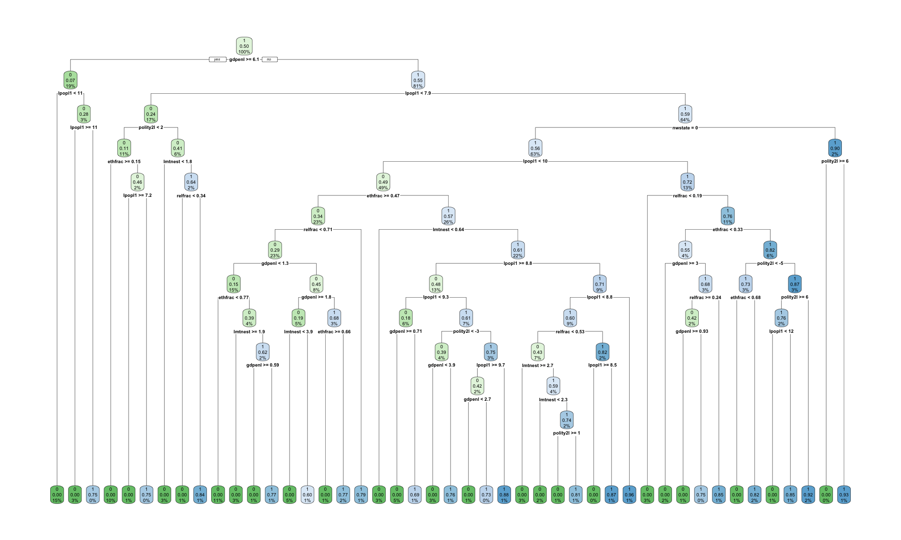
The prior argument instructs rpart to proceed as though onsets and non-onsets were equally frequent, which has the effect of making each onset count for roughly fifty times what it counted for before. Splits that separate a handful of wars from a great many non-wars now improve the objective, and the tree consequently grows. The method = "class" argument remains the only difference in kind from Part I, and the resulting figure is read exactly as the earlier ones were.
Two observations about that argument deserve emphasis, since the second of them is the more important.
First, the reweighting is a decision rather than a correction. Nothing in the data licensed it, and no diagnostic recommended it. We supplied it because we judged that a missed war matters more than a false alarm, which is a substantive judgment about consequences and not a statistical one. The tree without it was not broken; it was answering a different question, one we had posed carelessly.
Second, and more consequentially, we have reweighted the tree and we have not reweighted the forest. That asymmetry is deliberate, and its consequences appear shortly.
Why one tree is not enough
We arrive here at the problem that motivates the remainder of the week. Fitting the same tree to slightly different data does not produce a slightly different tree; it frequently produces a different tree altogether.
par(mfrow = c(1, 3))
set.seed(7)
for (i in 1:3) {
draw <- Train[sample(1:nrow(Train), nrow(Train), replace = TRUE), ]
t_i <- rpart(factor(onset) ~ gdpenl + lpopl1 + lmtnest + Oil +
nwstate + polity2l + ethfrac + relfrac,
data = draw, method = "class",
parms = list(prior = c(0.5, 0.5)),
control = rpart.control(cp = 0.004, minbucket = 20))
rpart.plot(t_i, box.palette = "GnBu", main = paste("Sample", i))
}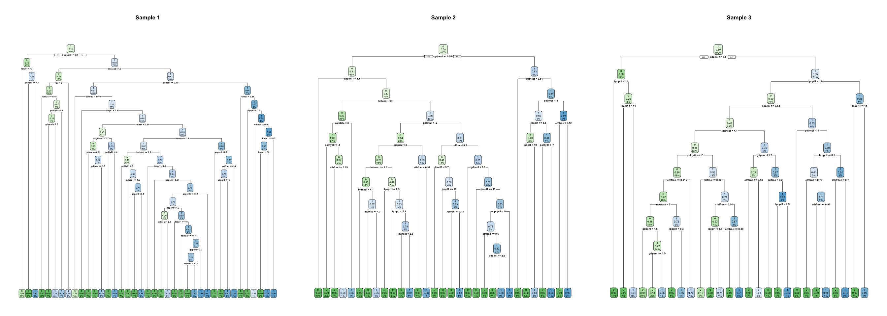
Three samples drawn from the same data yield three trees, and the variable sitting at the top of each is the one to watch. If the first split changes, everything beneath it changes with it, since every subsequent question is asked only of the cases that the first question directed that way.
The vocabulary for this was established last week, and the term is variance, in the sense that the model responds to the particular cases placed before it rather than to the structure underlying them. A single tree has low bias, since given sufficient depth it can represent almost any shape, and high variance, since which shape it represents depends heavily on the sample. The greedy procedure aggravates the problem, because a single early decision taken on a narrow margin propagates through everything below it.
A single tree is thus readable and unreliable at the same time, and the response, perhaps counterintuitively, is to stop reading it.
From bagging to random forests
Bagging, an abbreviation of bootstrap aggregating, is the first idea. The data are resampled with replacement a sufficient number of times that trees with good explanatory power are captured, a tree is fitted to each sample, and their predictions are averaged. The procedure is computationally intensive, and it works for the reason averaging generally works: individually noisy estimates, once averaged, are less noisy, provided their errors are not all the same error.
That proviso, as it happens, is precisely where the method acquires its name. Random forests begin from bagging and add a second randomization. Rather than scanning all the features at each split, the algorithm samples a subset of \(m\) variables and must then select its split from among those alone.
The rationale is precise. If income is the strongest predictor, for instance, then every bagged tree splits on income first, and the trees therefore resemble one another closely and err in the same places. Requiring most trees to proceed without it at any given split breaks that correlation. The individual trees thereby become worse, and yet their average becomes better.
This is the proposition to carry out of the week. A forest is not an attempt to build one excellent model. It is an attempt to build many mediocre models whose errors point in different directions, and then to let them vote.
Two parameters govern the procedure: \(B\) is the number of bootstrapped trees, and \(m\) is the number of variables sampled at each split. A common choice is \(m = \sqrt{p}\), where \(p\) is the number of features. Notably, when \(m = p\) the random forest reduces to bagging.
Fitting the forest
Last week’s claim was that changing one string changes the algorithm, and this is that change.
Train$onset_f <- factor(ifelse(Train$onset == 1, "war", "no_war"),
levels = c("no_war", "war"))
Test$onset_f <- factor(ifelse(Test$onset == 1, "war", "no_war"),
levels = c("no_war", "war"))
set.seed(7)
rf <- train(onset_f ~ gdpenl + lpopl1 + lmtnest + Oil +
nwstate + polity2l + ethfrac + relfrac,
data = Train,
method = "rf",
ntree = 300,
trControl = trainControl(method = "cv", number = 5),
tuneGrid = data.frame(mtry = c(2, 3, 5)))
rfRandom Forest
4428 samples
8 predictor
2 classes: 'no_war', 'war'
No pre-processing
Resampling: Cross-Validated (5 fold)
Summary of sample sizes: 3543, 3542, 3542, 3543, 3542
Resampling results across tuning parameters:
mtry Accuracy Kappa
2 0.9805785 -0.003979084
3 0.9794498 -0.005356815
5 0.9789981 -0.005866209
Accuracy was used to select the optimal model using the largest value.
The final value used for the model was mtry = 2.Everything apart from method = "rf" and the grid over mtry is the structure established last week: a formula, training data, a resampling scheme, and a set of values to try. The outcome had to be converted to a factor, since that is how caret is informed that the problem is one of classification rather than regression. Note also that nothing was rescaled, and that nothing needed to be.
Note as well what is not in that call. There is no prior, no class weighting, and no instruction of any kind that an onset matters more than a non-onset. We supplied precisely such an instruction to the single tree a few pages ago, and we have deliberately withheld it here. What follows is the consequence.
This chunk takes a minute or two to run, which is worth knowing before you begin.
Predicting for cases the model has never seen
train() refits the model on the whole of the training data once tuning is complete, so that the object is a fitted model and prediction proceeds from it directly.
pred <- predict(rf, newdata = Test)
head(pred)[1] no_war no_war no_war no_war no_war no_war
Levels: no_war warPrediction should proceed from rf rather than from rf$finalModel, since the final model holds the fitted forest but retains no record of any preprocessing. Calling it directly may therefore supply it with data in the wrong form, and it will return an answer regardless.
The accuracy trap
cm <- table(Predicted = pred, Actual = Test$onset_f)
cm Actual
Predicted no_war war
no_war 1865 30
war 3 0accuracy <- sum(diag(cm)) / sum(cm)
round(accuracy, 4)[1] 0.9826The number itself should be considered first, and it is very high, such that in the abstract of an article it would attract no particular scrutiny.
The one-sentence model from the start of Part II, the one containing no data at all, provides the comparison.
baseline <- mean(Test$onset_f == "no_war")
round(baseline, 4)[1] 0.9842Whatever the forest achieved must be read against that figure, and the gap between them is small or absent. We have grown nine hundred trees, tuned mtry by cross-validation, and arrived at approximately the proposition that nothing ever happens.
The table itself, rather than the summary, is where the substance lies. Reading down the column of actual wars, the question is how many of the onsets in the test set the model predicted, and the answer is generally close to none.
The forest is not malfunctioning. However, we requested accuracy, and accuracy on a two per cent outcome is maximized by predicting zero indefinitely, so that the model did precisely as it was instructed.
This is the stump from the beginning of Part II, returning in a more elaborate form. The single tree refused to split because no split improved accuracy; the forest grew nine hundred trees and then predicted almost nothing, for the same reason. We repaired the tree by telling it that the rare class mattered, and we declined to repair the forest, and the two figures should be read together. The disease is identical in both cases, and it lies in the objective rather than in the algorithm. caret tuned mtry so as to maximize accuracy, which is to say that it tuned toward the useless model, and reported success in doing so.
Nothing in the output announced this. The accuracy appeared excellent, the cross-validation was correctly specified, and the test set was genuinely held out. Every methodological requirement was satisfied, and the result is a model that has not once predicted the outcome it was built to predict.
This is the argument of the second reading for this week (Muchlinski et al. 2016), and it is the reason that article exists. Week 6 takes up the repair in full, covering precision, recall, the F1 score, thresholds, and class weighting, together with the question of what to do when one error costs substantially more than the other. For the present, the diagnosis matters more than the cure.
The four cells
The table printed above is a confusion matrix, and naming its cells requires first determining which class counts as positive, which is a decision made by the analyst rather than a property of the data. Here the positive class is war onset.
| Actually war | Actually no war | |
|---|---|---|
| Predicted war | True positive | False positive |
| Predicted no war | False negative | True negative |
A false positive is a country flagged as heading toward civil war that does not in fact experience one, whereas a false negative is a civil war that nobody anticipated. These are not the same error, and no serious application treats them as equivalent. Which of them one would rather commit is a political and ethical judgment about consequences, and accuracy collapses the two into a single number precisely by declining to pose the question.
Variable importance, and what it does not mean
We surrendered the readable tree, and variable importance is what is returned to us in its place.
varImpPlot(rf$finalModel, main = "Variable importance")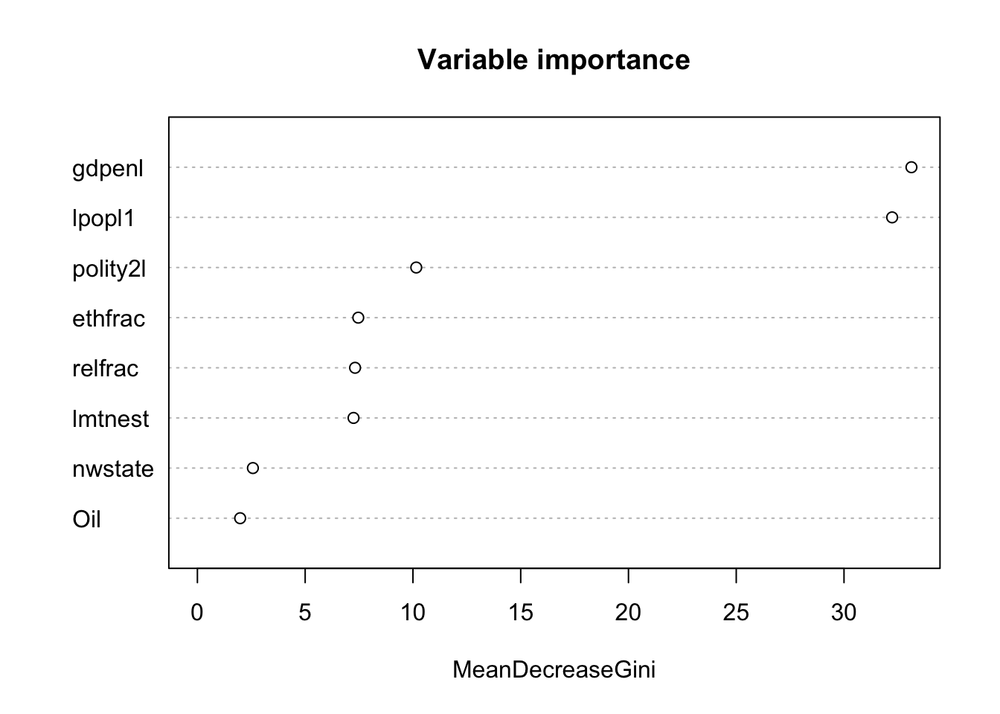
The underlying idea is straightforward. For each feature, one measures the extent to which the forest’s performance depends upon it, either by totalling the improvement that feature produced across all the splits in which it was used, or by permuting its values and observing how far the predictions deteriorate. Thus a feature that can be scrambled without consequence was evidently not contributing much.
Since the forest is bootstrapped, features that genuinely matter will on average be selected and used more frequently than others, and this is what makes the ranking meaningful at all.
The limits of the measure, however, matter more than the figure itself.
Importance is not effect size. The plot has no interpretable units. A feature twice as high as another is not twice as influential in any substantive sense, and the numbers are not comparable across models or datasets.
Importance carries no sign. Nothing here indicates whether higher income raises or lowers the risk of onset. A feature may sit at the top of the plot with a relationship that is positive, negative, or U-shaped, and the ranking cannot distinguish among them.
Correlated features divide their importance between them. Where two features carry substantially the same information, the forest uses them interchangeably, and each appears half as important as either would appear alone. A feature may therefore look unimportant because it has a twin rather than because it is irrelevant. In these data, where income, population, and several regime measures are entangled with one another, the possibility is not hypothetical.
Impurity-based importance is biased toward features with many distinct values, so that continuous variables tend to outrank binary ones for reasons unrelated to the world. It is worth comparing where Oil and nwstate, which are binary, sit relative to gdpenl, which is not.
None of it, finally, is causal. Importance describes what the model used in order to predict. It says nothing about what would follow from changing a feature, since nothing in the procedure ever posed that question.
The last point has a practical edge, in that variable importance is regularly presented, in policy briefs and in press coverage, as identifying the drivers of a problem. What it identifies is the set of predictors that a particular fitted model found useful on a particular dataset. These are different claims, and the distance between them is where a good deal of poor AI-informed policy analysis is located.
Prediction, forecasting, and early warning
Week 1 distinguished prediction from forecasting: prediction estimates an outcome for a case the model has not seen, whereas forecasting estimates one that has not yet occurred. Everything above is prediction, since our test set consists of country-years drawn at random from the same period as the training set.
The third reading for this week concerns the other activity (Hegre et al. 2019). ViEWS is an operating early-warning system that publishes monthly forecasts of political violence for months that have not yet occurred, and the difference is not merely presentational.
As soon as the target is the future, a random split becomes indefensible. If the model trains on 1995 and 1999 and is tested on 1997, it has observed the years on either side of the case it is predicting, and it will make use of them. Forecasting therefore requires splitting on time: training up to a date, forecasting beyond it, and accepting that one cannot look ahead. Nearly every published forecasting model that appeared too good to be true was too good on account of some version of this.
A subtler problem remains, which cross-validation does not address, in that cross-validation assumes cases to be interchangeable while country-years plainly are not. Sudan in 1996 is not independent of Sudan in 1995, and a fold that holds one while the other trains the model is leaking information. This is the structural difference flagged at the start of Part II, and it has a name: the observations are not independent, while the standard resampling procedures assume that they are. Week 6 returns to the problem and to the ways in which it can be mitigated.
The politics of early warning
A forecast is not merely an analysis that happens to concern the future. It is, rather, an object produced in order to be acted upon, and that purpose changes what its errors mean.
Suppose a system of this kind flags a country as being at elevated risk. Consequences follow, in investment decisions, aid allocations, insurance premiums, travel advisories, diplomatic posture, and on occasion in the argument for intervention. The forecast thereby enters the politics of the country it describes.
That observation should be combined with the base rate. Thus, where the outcome occurs in two per cent of cases, even a model with genuinely good discrimination will produce considerably more false alarms than true warnings, simply because there are so many more non-events available to be wrong about. A country may therefore be flagged, bear the consequences of having been flagged, and have been a false positive throughout. It will not be informed of this, and the system has no means of establishing it either, until the year passes without incident and the case leaves the window.
Moreover, a forecast can act upon the world it describes. If a warning of instability withdraws investment, and withdrawn investment raises the likelihood of instability, then the model has participated in the outcome it predicted and will appear more accurate for having done so. This is not a defect in the statistics. It is, instead, what occurs whenever a prediction about people is published to people who have the power to respond to it.
The closing question last week concerned who defines similarity, and the closing question this week concerns who defines the threshold. Somewhere between the forest’s vote share and a red mark on a map, a number is selected that determines which countries are flagged, and that number sets the ratio of false alarms to missed wars. It is among the most consequential decisions in the entire pipeline, it is rarely made by anybody who bears its consequences, and it almost never appears in the write-up.
Reading
Fearon, J. D., and Laitin, D. D. 2003. “Ethnicity, Insurgency, and Civil War.” American Political Science Review 97(1): 75–90. (Fearon and Laitin 2003)
These are the data used above and the specification fitted above. The article should be read for its argument about the causes of civil war, and it is worth noting throughout that it is an explanatory article. Its authors are not attempting to predict onset; they are attempting to explain it, and the difference between those two objectives is the thread running through this week.
Muchlinski, D., Siroky, D., He, J., and Kocher, M. 2016. “Comparing Random Forest with Logistic Regression for Predicting Class-Imbalanced Civil War Onset Data.” Political Analysis 24(1): 87–103. (Muchlinski et al. 2016)
This one should be read for its argument about rare outcomes rather than for its implementation, and, if time permits, alongside the critical exchange it provoked, since the disagreement is instructive about what a performance comparison can and cannot settle.
Hegre, H., et al. 2019. “ViEWS: A Political Violence Early-Warning System.” Journal of Peace Research 56(2): 155–174. (Hegre et al. 2019)
This should be read as a description of a system that is actually in use, rather than as a methods article. Particular attention is worth giving to what its authors say about how the forecasts are intended to be interpreted, and by whom.
Recommended, not required.
Pinckney, J., and RezaeeDaryakenari, B. 2022. “When the Levee Breaks: A Forecasting Model of Violent and Nonviolent Dissent.” International Interactions 48(5): 997–1026. (Pinckney and RezaeeDaryakenari 2022)
This article forecasts both armed and unarmed conflict at the country-year level, and it does so by training eight machine-learning algorithms and combining them into five forecasting ensembles. The relevance to this week is direct, in that the logic of the random forest reappears one level higher: where a forest averages many trees whose errors point in different directions, an ensemble forecast averages many algorithms on the same reasoning. It is also worth reading for the contrast with the cases above, since the outcome of interest includes nonviolent mobilization rather than civil war alone, and unarmed uprisings are neither as rare nor as well measured.
Before the workshop
Install rpart, rpart.plot, tree, randomForest, and caret, and run every chunk in this handout once. The forest takes a minute or two, which is better discovered at home than in the room.
Questions for the session
Come with a view on at least two of these.
Fearon and Laitin set out to explain civil war, whereas we used their variables to predict it. What did we learn that they did not, and what did they establish that our model cannot?
A single tree is readable and unreliable, while a forest is reliable and unreadable. For a political scientist, which of these failures is the more serious, and does the answer depend on the purpose the model is to serve?
The forest deliberately makes each tree worse, by withholding features from it, in order that the ensemble should be better. Is there anything analogous in the way political institutions aggregate judgments? Committees, juries, federal structures, and multiple veto players are all admissible.
Our model achieved very high accuracy and predicted almost no wars, and every technical step was performed correctly. What does this suggest about the relationship between methodological correctness and usefulness?
Variable importance is regularly reported in policy documents as identifying the drivers of a problem. Write the one sentence you would add to such a document in order to make it honest, and state what would be lost in the process.
Who should select the threshold at which a forecast becomes a warning, and to whom should that selection be explained? Note that those bearing the cost of a false alarm and those bearing the cost of a missed war are generally not the same people.